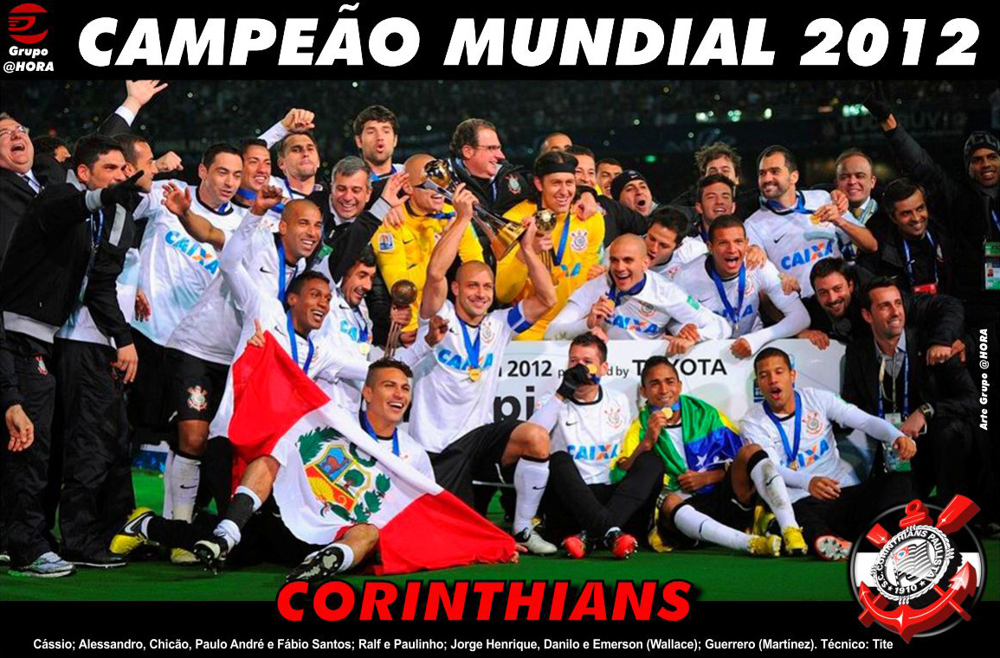
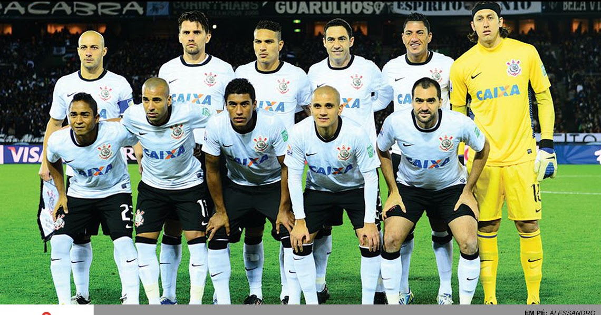

corinthians campeao 2012 mundial
A Copa do Mundo de Clubes da FIFA de 2012 foi a nona edição do mundial de clubes da Federação Internacional de Futebol (FIFA), disputada de 6 a 16 de dezembro de 2012 no Japão.
Nessa competição, pela primeira vez a FIFA testou o uso de chips eletrônicos na bola (os chamados GoalRef) de jogo que auxilia caso ocorresse lances duvidosos de gol. Também foi testado o sistema de câmeras conhecida como Hawk-Eye.
O Corinthians conquistou seu segundo título no torneio após vencer o Chelsea por 1–0 na final no Estádio Internacional de Yokohama no Japão. Foi a primeira conquista de um clube não europeu desde a edição de 2006.

escalaçoes do corinthins:Cássio; Alessandro, Chicão, Paulo André e Fábio Santos; Ralf e Paulinho; Jorge Henrique, Danilo e Emerson (Wallace); Guerrero (Martínez). Técnico: Tite

escalaçao chelsea: Cech; Ivanovic (Azpilicueta), Cahill, David Luiz e Ashley Cole; Ramires e Lampard; Moses (Oscar), Juan Mata e Hazard (Marin); Fernando Torres. Técnico: Rafa Benítez

o gol da vitoria:
Com milagres de Cássio e grande atuação de Guerrero, autor do gol que garantiu o título, o Corinthians venceu o Chelsea por 1 a 0 e levantou o troféu com a histórica invasão da torcida ao Japão.
O Corinthians dominava a bola e pressionava o Chelsea. Após trocas de passes, a bola ficou com Paulinho, que tentou abrir espaço dentro da área, mas o time inglês estava muito fechado. O camisa 8 deixou a bola com Danilo, que tentou a finalização de direita. O chute foi bloqueado, mas a bola subiu e caiu para Guerrero livre na pequena área tocar de cabeça pro fundo do gol dos Blues.